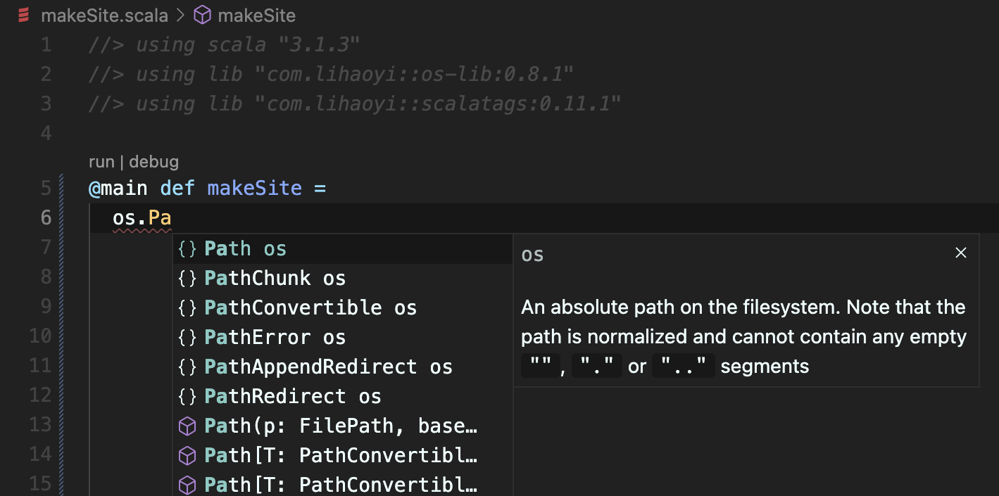

How to write a website generator in Scala, Part 1
- Monday, 1 August 2022
- 4 minute read
- all articles
I decided to write my own website generator to build my personal website. My goal was to use Markdown to drive the content, and use Scala to make templating the HTML easier. Read on for how you can do it yourself.
To help build the website I used a new tool Scala CLI. It's a great aid for rapid prototyping of Scala code, making adding dependencies and other configuration simple. I also used VS Code with the Metals extension to get IDE features when writing the code.
Requirements
The key idea behind the site-generator should be simplicity: low on configuration, driven by markdown files that are expanded via templates, which wrap the markdown content in further HTML. I wanted a very flexible template language for generating websites, so I chose Scala 3.
The user of the framework should see the directory structure as a single type-safe object, with access to the metadata and contents of each markdown file.
Some markdown files will just act as data, visible to all the pages, but if it declares a template in its front-matter, then it will be published to a page with a dedicated URL. A declared template will be resolved to a Scala function. That function will recieve the markdown file's metadata and content, and also see the database of all other markdown-derived data.
A Basic Implementation
To begin I followed the guide to build a basic static website generator from Hands-on Scala Programming by Li Haoyi. I would recommend this book for beginners looking to get to speed with Scala: It shows how to build a number of practical projects using Scala libraries that are very accessible.
Chapters 9 and 10 of the book have the reader incrementally develop a script to generate a static blog website, with an index page of all articles, and an individual page per article.
I chose to embellish the process described in the book, with the goal to eventually build the framework for the static site generator described in the previous section.
Getting Started
Instead of using ammonite as Hands-on Scala suggests, I opted to drive development with Scala CLI, giving me the most flexibility to prototype and grow the website generator.
To begin, I opened a blank file site/makeSite.scala and added the following:
//> using scala "3.1.3"
//> using lib "com.lihaoyi::os-lib:0.8.1"
//> using lib "com.lihaoyi::scalatags:0.11.1"
@main def makeSite = println("made site!")
To make sure everything is set up well, I ran the site directory with scala-cli, which detected the makeSite main method and executed it:
$ scala-cli run site
Compiling project (Scala 3.1.3, JVM)
Compiled project (Scala 3.1.3, JVM)
made site!
This initialised the site directory as a scala-cli project, making it ready to open in VS Code and get IDE features from the Metals extension.
Now, with the help of Metals, the editor recognises the makeSite main method, which we can run from within the editor, and it also provides code completions for the library dependencies we declared at the top of the file, such as os-lib:

Filling in the Details
The next steps were to complete the basic implementation as detailed in the book.
I made a few changes to processing of files:
- Process markdown with flexmark-java, rather than commonmark-java. This gave me more flexibility, such as providing inline attributes for images in markdown.
- I also use flexmark's front matter parser on markdown files, so I can use the metadata for driving templates.
- Sample the word count for each article, to estimate read time.
I also added a lot of templates for additional parts I required for this website:
- card views for displaying links and recent articles,
- everything on the About page
- responsive sidebar,
- website footer,
- navbar,
- previous/next links for individual articles,
- displaying social links
- reading publish date, titles and other metadata from markdown front-matter.
Architecturally I made a few changes. For example, there is now a single source of truth for the directory root of markdown files. The book instead reads markdown files relative to the current working directory. This directory can change a lot depending on where the script is executed. e.g. a VS Code code lens executes from a different directory than when executing with scala-cli on the command line. Now, I discover the root directory at compiletime, by capturing the source-file that the main method was declared in.
Next Steps
To take the generator further I will try to generalise the implementation to make it flexible for many use cases with minimal configuration. I plan to experiment with a journal to exercise this. Then I intend to release the generalised solution as a downloadable seed project.
Conclusion
I had fun building this site, learning a few things about Bootstrap in the process. I would also like to emphasise how much help scala-cli was in keeping me motivated to reach this milestone of a proper personal website, featuring a first written article.